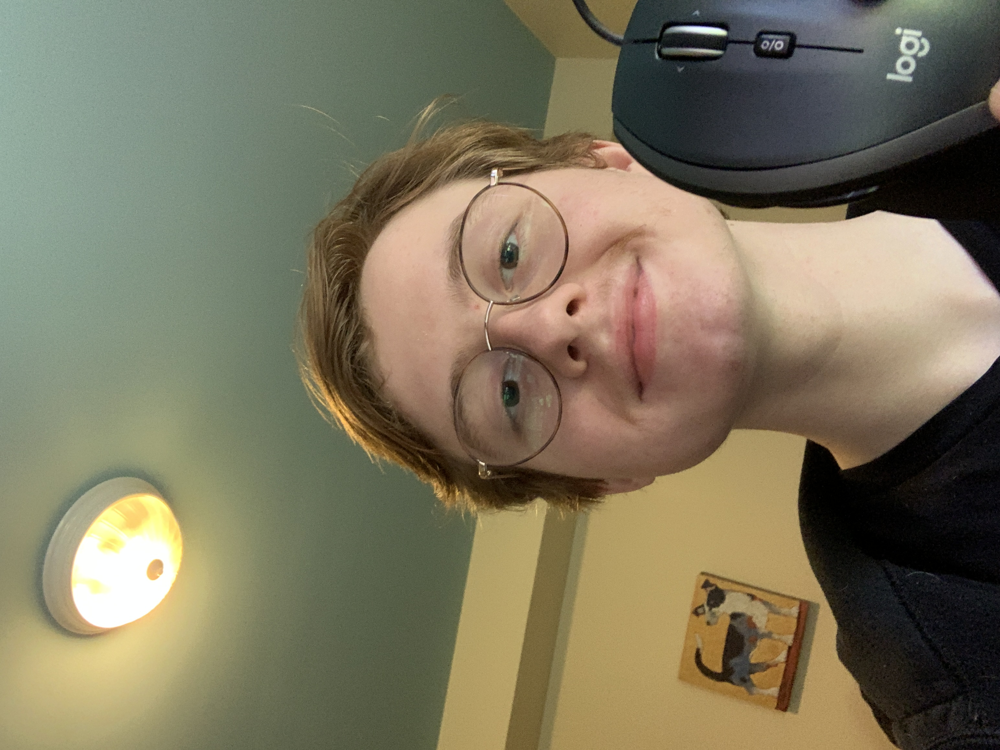

About Page
Biography
Born on July 28, 2004, Riordan has a twin brother, Roarke, and two younger sisters, Delaney and Sloane. Riordan grew up in Grosse Pointe Park, MI, and attended Grosse Pointe South High School, where he met most of his friends. As the COVID pandemic began, Riordan and his friends played video games to stay in touch, though some in-person games were hard to replicate online. In the process of trying to work around this issue, Riordan began tinkering with game development, using Minecraft as a game engine. His first game, Werewolf, was a fully-automated version of the 7-24 player social deduction game Werewolves of Miller's Hollow, which is a more complex version of similar games like Mafia. After enjoying both the development, iteration, and playing process of making several games, Riordan realized developing games is what he wanted to do for a living, so he searched for the best game design programs in US colleges. Eventually, he decided on MSU, where he's currently attending to get a bachelor's degree in games and interactive media, with a focus on design and programming. He is also very bad at taking interesting pictures (sorry!).
- Name: Riordan Kemp
- Born: 7/28/2004
